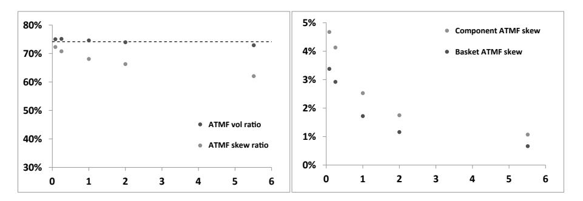
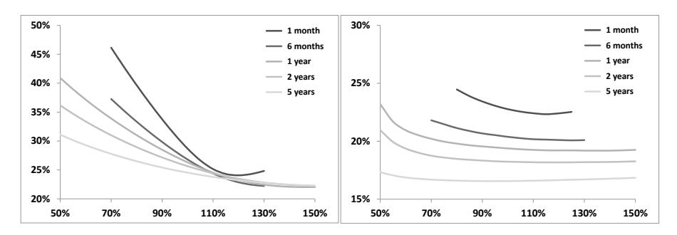
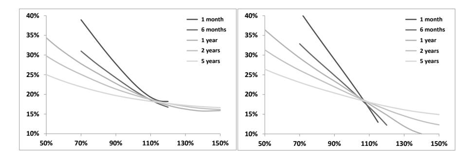
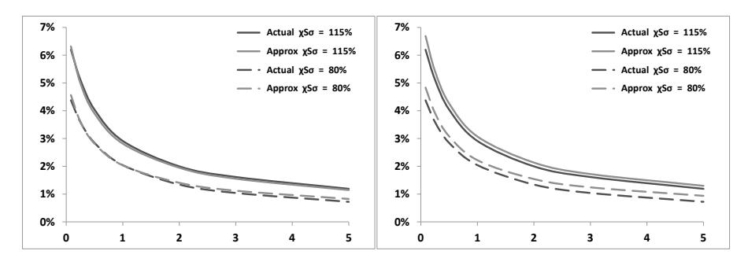
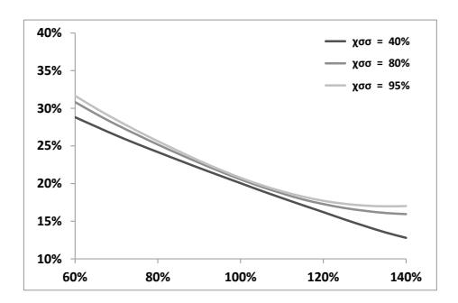
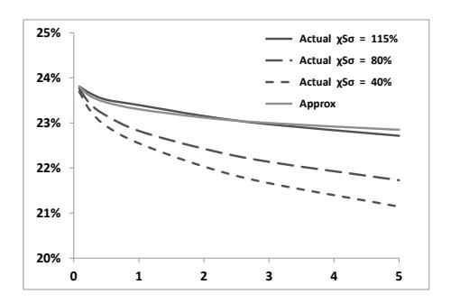
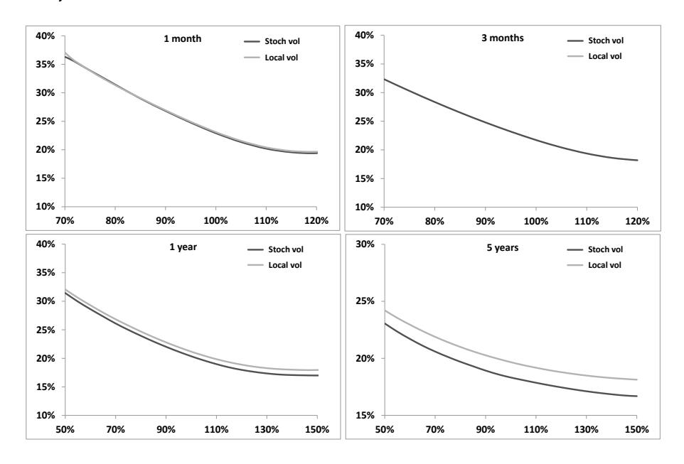
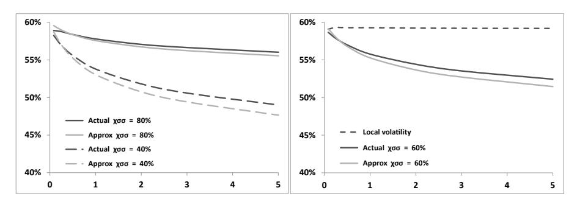

第十一章：多资产随机波动率模型
本笔记基于 Bergomi《Stochastic Volatility Modeling》第十一章，按原书行文结构整理，兼顾数学推导的完整逻辑与交易实务视角。本章是全书从单资产模型向多资产拓展的核心章节。
目录
- 导言：多资产随机波动率的核心问题
- 短期 ATMF 篮子偏斜（§11.1）
- 多资产随机波动率模型的参数化（§11.2）
- ATMF 篮子偏斜（有限期限）（§11.3）
- 相关性互换（§11.4）
- 端到端工作流算例
导言：多资产随机波动率的核心问题
第八章建立了单资产随机波动率模型的微笑近似框架，核心结论是：ATMF 偏斜由现货/方差协方差函数 的双重积分 决定，曲率由 的积分 决定。单资产模型的参数化——第七章的双因子前向方差模型——已经足以处理指数期权、障碍期权、雪球等路径依赖产品。
本章的出发点是：多资产随机波动率模型不只是单资产模型的简单并列。
把两个独立的单资产模型拼在一起，还差什么？差的是跨资产的协动关系：除了各自的现货/波动率协方差（）和波动率/波动率协方差（），还需要定义跨资产的这两类协方差——资产 的现货与资产 的波动率如何协动（），以及资产 与资产 的波动率之间如何协动（）。这两类跨资产协方差在多资产局部波动率模型中是被动确定的，而在多资产随机波动率模型中则是自由度。
本章要解决三个递进的问题：
第一，篮子偏斜如何由成分的偏斜和跨资产协方差共同决定？ 答案是，对大型指数，成分本身的偏斜对篮子偏斜的贡献可以忽略，篮子偏斜主要来自跨资产的现货/波动率协方差（§11.1）。
第二，如何以最少的参数刻画多资产随机波动率模型的全局相关性结构？ Bergomi 引入两个无量纲参数 （跨资产现货/波动率相关系数相对于对角项的比值）和 （跨资产波动率/波动率相关系数相对于对角项的比值），给出简洁的参数化方案，并推导全局相关矩阵正定的充要条件（§11.2）。
第三，两类跨资产参数 和 对哪些产品敏感？ 本章给出两个答案：篮子 ATMF 偏斜主要由 控制（§11.3），相关性互换公允价格主要由 控制（§11.4）。这意味着两者分别是 和 的市场隐含对应物——原则上，观察到足够流动性的篮子期权和相关性互换报价，就能分别反推这两个参数。
读完本章笔记，你将掌握以下能力：
- 推导篮子 ATMF 偏斜的一般表达式，理解大篮子极限下偏斜的跨资产来源（§11.1）
- 构建多资产随机波动率模型的全局相关矩阵，判断 、、 的正定约束（§11.2）
- 计算有限期限下篮子 ATMF 偏斜的近似公式，评估局部波动率模型的偏差（§11.3）
- 推导相关性互换公允价格的二阶近似，理解其对 的敏感性（§11.4）
本章在全书中的位置：它承接第八章（单资产随机波动率微笑的 、 框架）和第七章（双因子前向方差模型的参数设定），为第十二章（局部随机波动率模型 LSV）的多资产扩展奠定基础。局部波动率模型在本章作为基准多次出现——它的预测在篮子偏斜和相关性互换上均与随机波动率模型产生显著差异，这些差异构成了使用多资产随机波动率模型的实证依据。
1. 短期 ATMF 篮子偏斜（§11.1）
研究动机
第八章的短期 ATMF 偏斜公式（式 8.36）给出了单资产情形的结论：偏斜等于 ，即现货对数收益率与 ATMF 波动率的瞬时协方差决定了偏斜。对篮子来说，同样的公式形式上成立，但"篮子的 ATMF 波动率如何变动"需要展开到成分层面——这正是本节的任务。
把篮子偏斜分解到成分上，可以厘清两件事：第一，成分各自的偏斜（对角项）贡献了多少？第二，跨资产的现货/波动率协方差（非对角项）贡献了多少？这一分解直接揭示了为什么局部波动率模型对篮子偏斜的预测与市场现实背道而驰——局部波动率模型中两类贡献是耦合的，而随机波动率模型允许它们独立。
1.1 篮子的基本设定
考虑 个资产构成的篮子，固定权重 ：
相对权重（随时间变化），满足 。短期情形下近似 为常数。篮子收益率：
篮子瞬时方差：
其中 是 与 的即时相关系数， 是 的瞬时波动率。短期 ATMF 篮子波动率 ，即：
1.2 篮子偏斜的完整分解
利用 （对式 11.3 做 Itô 微分），代入短期偏斜公式（式 11.2b），整理后得到篮子 ATMF 偏斜：
推导细节：，。计算 ，展开后把 的项（涉及 ）和 的项（涉及 ，即跨资产协方差）分别归并，利用式 11.2b 把 表达为 ，得到式 11.4。
经济含义：项（A）体现了篮子成分各自的现货/波动率协动（对角 spot-vol），项（B）体现了资产 的现货与资产 的波动率之间的跨资产协动（cross spot-vol）。在大篮子极限下，项（A）以 速率衰减趋零——当成分数量很多时，篮子偏斜几乎完全由跨资产协方差决定，而非成分本身的偏斜。
1.1 同质大篮子的极限（§11.1.1）
设所有成分参数相同：，（），，。式 11.3 和 11.4 简化为：
其中 是某成分与另一成分 ATMF 波动率的跨资产瞬时协方差。注意偏斜的对角项 随 趋于零。
大篮子（）极限：
两个极端情形：
-
（跨资产协方差为零）：，篮子无偏斜。这意味着如果各资产波动率只与自身现货相关、与其他成分现货不相关，则无论单个成分的偏斜有多陡，大型指数的偏斜都会消失。
-
（跨资产协方差等于对角协方差，即各成分波动率100%正相关）：利用 ，得到：
此时篮子偏斜大于成分偏斜，因为 。直觉：篮子波动率被"均一化"了（降低了 倍），同样幅度的跨资产协方差产生了更大的相对偏斜。
1.2 局部波动率模型的预测（§11.1.2）
局部波动率模型中，隐含波动率是现货和时间的确定性函数：，因此波动率完全由现货驱动，驱动的布朗运动与现货相同。对同质篮子，局部波动率函数相同，这意味着：
成分 的现货与成分 的波动率之间的相关，等于 和 的现货相关系数 乘以对角的现货/波动率相关。代入式 11.5，得局部波动率模型的预测：
这给出一个关键比率：
局部波动率模型的预测是：篮子偏斜与成分偏斜之比，等于篮子波动率与成分波动率之比，均等于 。
由于 ，这个预测说明篮子偏斜小于成分偏斜。取典型值 ，比值约为 77%，即篮子偏斜比成分偏斜小约 23%。

图 11.1：左图：10 只相同微笑成分等权篮子（）在局部波动率模型下 和 随期限的变化，虚线为短期理论值 。右图：95%/105% 行权价的 ATMF 偏斜（vol pts）。 在各期限几乎精确维持理论值，而 在长期限端实际上低于短期理论值——这说明局部波动率模型的篮子偏斜在长期限上比短期近似公式预测的还要弱。
1.3 现实中的篮子偏斜（§11.1.3）
市场数据提供了清晰的反驳：以 Euro Stoxx 50 等欧洲股指为例，隐含相关系数（由式 11.6a 从波动率比值反推）约为 ，意味着指数 ATM 波动率约比成分低 25%——这与局部波动率预测一致。
但市场 ATMF 偏斜呢？指数偏斜通常比成分偏斜陡约 25%，即 。与式 11.8 对比：——这与"各成分波动率 100% 正相关"的极端情形吻合。
局部波动率模型的预测是 （比成分弱），而市场实际是 （比成分强），两者方向相反。这一差距是本章引入多资产随机波动率 参数化的直接动机：需要能独立控制跨资产现货/波动率协方差，使其超过局部波动率模型的限制。
1.4 指数的有效成分数量（§11.1.4）
公式 11.5a/b 假设等权篮子，而真实股指是不等权的。对不等权篮子，若所有成分波动率相同，篮子方差为：
对比式 11.5a，有效成分数量定义为：
这正是经济学中的**赫芬达尔-赫希曼指数（HHI）**的倒数，用于衡量市场集中度。 可以大幅小于名义成分数 ：
| 指数 | （名义成分数） | （有效成分数） |
|---|---|---|
| S&P 500 | 500 | 143 |
| Euro Stoxx 50 | 50 | 37 |
| NIKKEI | 225 | 47 |
| KOSPI | 200 | 17 |
| SMI | 20 | 8 |
KOSPI 和 SMI 的 尤其小，意味着这两个指数的大篮子近似适用性有限——头部成分权重很大，不能简单套用 的公式。
2. 多资产随机波动率模型的参数化（§11.2）
研究动机
§11.1 揭示了篮子偏斜与跨资产协方差的关系，但没有回答一个更根本的问题：给定一组单资产随机波动率模型，如何系统地参数化它们之间的跨资产相关性结构？
直接做法是列出所有跨因子相关系数——对 个资产、每个资产 3 个因子（现货 、长因子 、短因子 ），全局相关矩阵是 的，自由参数数量为 ，且难以给出经济直觉。
Bergomi 的解法是绕开因子层面，直接参数化可观测的物理量：两资产间的现货/波动率相关 和波动率/波动率相关 ，用它们与对角项之比来定义两个无量纲数 和 。这样的参数化既模型无关（不依赖具体的因子结构），又有直接的经济含义，且参数数量从 压缩到 3 个标量（、、）。
2.1 同质篮子的相关性结构（§11.2.1）
以 个相同资产组成的篮子为例，每个资产由第七章的双因子模型驱动：现货 、因子 （短）、因子 （长），参数 对所有成分相同。
对角协方差函数（式 11.13、11.14）——同一资产的现货与前向方差之间的协方差：
对角情形下：，，，。
跨资产参数 ：定义跨资产的现货/波动率相关系数为对角相关的 倍：
在平坦 VS 期限结构假设下，这等价于：
即资产 的现货与资产 的隐含波动率之间的相关，等于 乘以资产 本身的现货/隐含波动率相关。
跨资产参数 ：定义跨资产的波动率/波动率相关系数为对角相关的 倍：
等价地：
即不同资产在相同或不同期限的隐含波动率之间的相关，等于 乘以同一资产两个期限波动率之间的相关。
技术说明： 可以超过 1
和 作为相关系数，受 约束（源于全局相关矩阵正定条件）。但 没有上界为 1 的限制——它可以大于 1。从物理意义上看， 意味着跨资产现货/波动率协方差大于对角协方差，即"资产 下跌时，资产 的波动率上升幅度超过资产 自身下跌时波动率的上升幅度"。这在多个高度关联资产（如欧元区股指）中是合理的——全市场下跌时，市场对任何单一成分的波动率预期都会快速上升，且这种上升比成分各自下跌时的反应更剧烈（系统性恐慌放大效应）。正是这个机制使得指数偏斜可以超过成分偏斜。
全局相关矩阵的正定条件：每个资产有 3 个布朗运动，全局矩阵为 。利用该矩阵的循环对称性（置换对称，因为所有资产相同），可以在离散 Fourier 变换基底下对角化。对每个 Fourier 模式 ，定义：
正定条件压缩为：对 和 两种情形，以下 矩阵
均需半正定。等价地，引入归一化后的有效相关系数：
正定条件等价于：将单资产相关矩阵中所有现货/波动率相关系数替换为 后，对两个 值（分别对应 和 ）矩阵均正定。
两个 值的显式表达（式 11.17）：
局部波动率模型作为特例：令 ，则两个 值均等于 1，全局相关矩阵退化为以单资产相关矩阵为"砖块"的块对角结构，正定性自然满足。这验证了局部波动率模型是多资产随机波动率框架的一个特殊情形（）。
结论：多资产模型由单资产参数 加上三个额外标量 完整刻画。正定约束只需验证两个 矩阵。
2.2 χ 参数的历史估计值（§11.2.2）
如何从市场数据估计 和 ？
- 的估计：对每对资产 ，计算历史时间序列中 和 在多个期限 上的平均。
- 的估计：计算 和同样量的另一种排列方式，在 上取平均。
技术提示：估计时必须使用异步估计量（asynchronous estimator，参见文献 [12]），否则由于交易时区不同（如东京 vs. 纽约），数据同步问题会系统性低估相关系数。
表 11.2 给出了主要股指对的历史估计值（两个 5 年样本：2003–2008 和 2008–2013）：
| 资产对 | 样本区间 | （两种估计） | （两种估计） | |
|---|---|---|---|---|
| S&P500/Stoxx50 | 2008–2013 | 83% | 87%、86% | 84%、84% |
| Stoxx50/FTSE | 2008–2013 | 89% | 95%、93% | 92%、92% |
| S&P500/NIKKEI | 2008–2013 | 55% | 59%、71% | 54%、55% |
| NIKKEI/KOSPI | 2008–2013 | 67% | 85%、78% | 72%、73% |
| S&P500/NIKKEI | 2003–2008 | 45% | 56%、53% | 31%、31% |
几个关键观察：
第一， 和 通常与 接近但略大。对高度相关的资产对（Stoxx50/FTSE，）， 可达 93%–95%，仍在 1 以内。
第二，对相关性较低的资产对（日本市场与欧美）， 的两种估计差异较大。原因是日经指数历史上与 S&P500 的现货/波动率相关性（日本 VIX 与日经的相关）有时与其他市场处于不同的状态，使得两种估计方向之比差异明显。
第三， 的两种估计（以哪个资产的对角项作为分母）几乎相同，这是因为各大股指的波动率/波动率对角相关在截面上很接近——这使得 的估计对估计方式鲁棒。
第四，危机期间（2008–2013）各资产对的 普遍高于平静期（2003–2008），反映了危机中跨市场联动增强的事实。
对中国市场的参照：A 股指数（沪深 300 ETF）与 S&P 500 和 Euro Stoxx 50 的现货相关系数通常在 20%–40% 之间（次级传导，与 VIX 走势关联更强）。A 股与海外市场的 估计历史上约为 30%–60%（波动率跨市传导较弱）， 约为 40%–70%（全球恐慌情绪仍有一定传导）。尚无公开系统性统计，可参照滚动历史相关系数自行估计。
3. ATMF 篮子偏斜（有限期限）（§11.3）
研究动机
§11.1 给出了短期（）极限下篮子偏斜的分解，核心结论是大篮子偏斜几乎全部来自跨资产现货/波动率协方差，由参数 控制。但实际交易中期权都有有限期限，短期近似是否足够？本节将偏斜计算推进到有限期限、vol of vol 一阶近似的精度。
推导路径与第八章的单资产情形完全平行：篮子的 ATMF 偏斜由篮子现货/前向方差协方差函数的双重积分 决定。本节的任务是将 分解为成分对角项与跨资产项，并用 参数化后者，得到一个只涉及可观测量的篮子偏斜近似公式。
3.1 篮子偏斜的积分表达
根据第八章式 8.22，有限期限 的 ATMF 偏斜 由下式给出：
其中 （式 11.19）， 是篮子对数收益率与篮子前向方差的瞬时协方差函数（式 11.20）。
在同质篮子、平坦 VS 期限结构、权重冻结等假设下（详见原书 §11.3 的推导）， 最终化简为：
其中 是单个成分的对角现货/前向方差协方差函数。这一化简的直觉是：篮子前向方差 在 vol of vol 一阶近似下对 不敏感（因为权重冻结近似下篮子前向方差与 无关，只与 有关），而 中来自 的贡献（跨资产现货/波动率协方差）以乘积形式与 因子分离。
篮子偏斜的最终近似公式（式 11.24）：
其中 是单个成分的 ATMF 偏斜（来自第八章近似公式）， 是成分间现货相关， 是跨资产现货/波动率相关系数与对角项之比。
几个极端情形的检验：
| 参数条件 | 含义 | |
|---|---|---|
| （大篮子） | 跨资产协方差为零，篮子偏斜消失 | |
| 局部波动率模型：篮子偏斜弱于成分 | ||
| 跨资产协方差等于对角协方差：篮子偏斜强于成分 | ||
| 篮子偏斜显著强于成分，对应市场实际观察 |
式 11.24 短期极限的自洽验证：令 ，利用 和短期极限 ，可以直接验证式 11.24 退化为 §11.1 的短期结果（式 11.5b）——两套推导在短期极限处精确相容（原书式 11.25 给出了完整的验证）。
式 11.24 还揭示了一个关键事实：因子 中， 部分是对角贡献（成分自身偏斜）， 部分是跨资产贡献。对大篮子，对角贡献以 消失，篮子偏斜完全由 决定。这使得篮子偏斜成为 的直接市场隐含——一旦 已知（从波动率比值反推），就可以从篮子/成分偏斜比反推 。
3.1 双因子模型的应用（§11.3.1）
在双因子模型下，成分 ATMF 偏斜（式 11.27）：
篮子偏斜直接代入式 11.24：
式 11.28 有一个重要性质：篮子偏斜的期限结构形态（方括号内容）与成分完全相同，只是整体幅度被因子 缩放。因此，若把单资产参数 等比例缩放，就可以在保持期限结构形态的前提下匹配篮子偏斜的水平——这是实务中从指数偏斜反推成分参数的操作基础。
篮子 VS 波动率（式 11.30）：在平坦相同 VS 期限结构和权重冻结假设下，篮子 VS 波动率有精确公式：
其中 是捕捉跨资产波动率相关效应的函数（式 11.29），仅依赖 （而非 ）。
注意：权重冻结近似下， 只依赖 和 ，不依赖 。但图 11.6 显示实际 MC 结果中 对 有明显依赖——这说明权重冻结近似对 的精度不如对 的精度高。
3.2 数值验证（§11.3.2）
成分参数取表 11.3（由表 8.2 的指数参数将 缩小约 30%）：
| 174% | 0.245 | 5.35 | 0.28 | 0% | −53.0% | −33.9% |
取 ，，平坦 VS 波动率 30%。
时的篮子微笑（图 11.2）：当 时，跨资产现货/波动率协方差为零，篮子 ATMF 偏斜几乎消失——仅剩对角贡献的 份额。这与式 11.24 一致：

图 11.2：左图：表 11.3 参数下成分的微笑；右图：，， 时的篮子微笑。篮子 ATMF 偏斜几乎为零，只剩下轻微的曲率（来自 vol of vol 的对称贡献）。这直观验证了"大篮子偏斜完全由跨资产协方差决定"的结论。
合理 值下的篮子微笑（图 11.3）：取 和 ：

图 11.3：，；左图 ，右图 。右图的篮子 ATMF 偏斜（95/105 差值约 2.3%）已超过左图的成分偏斜，与市场观察一致。 正是产生篮子偏斜强于成分偏斜这一结果的参数条件。
篮子 ATMF 偏斜的近似精度（图 11.4）：

图 11.4：左图：实际 MC 篮子偏斜与式 11.24 近似（使用实际成分偏斜）对比——两者高度吻合。右图：使用式 11.27 的近似成分偏斜代入式 11.28——右图的轻微高估来自式 11.27 本身对成分偏斜的高估（见图 8.3）。
对偏斜几乎无影响（图 11.5）：

图 11.5：固定 ，，改变 为 40%、80%、95%。三条微笑曲线的 ATMF 偏斜几乎相同（95/105 偏斜分别为 2.01%、2.05%、2.06%），但翼部形状（vol of vol 效应）有微小差异。这证实了篮子偏斜对 不敏感，对 高度敏感—— 是偏斜的主控参数， 是 vol of vol 相关产品（如相关性互换）的主控参数。
篮子 VS 波动率的近似精度（图 11.6）：

图 11.6： 的 MC 实际值与式 11.30 近似对比，三条曲线对应 、、。在权重冻结假设下，式 11.30 只含 和 ，预测三条曲线重合——但实际 MC 结果显示三者有明显差距。这说明权重冻结近似对 不够准确， 实际上对 也有依赖，只是分析近似未捕捉到。
3.3 与局部波动率模型的对应（§11.3.3）
多资产随机波动率模型在 时退化为局部波动率模型（§11.2.1 的结论）。图 11.7 直接对比了两个模型的篮子微笑：

图 11.7：多资产随机波动率（）与多资产局部波动率（用随机波动率生成的成分微笑校准，）的篮子微笑对比，多个期限。短期两者高度吻合；长期随机波动率的 ATMF 水平低于局部波动率约 0.5–1 vol pt。
差异的来源：随机波动率模型的前向方差波动率更高（尤其是长期限），使得有效的现货/现货相关系数低于 ——长期来看，"有效相关"被 vol of vol 稀释了。这一差异在相关性互换上会表现得更为突出（见 §11.4）。
4. 相关性互换（§11.4）
研究动机
§11.3 确认了篮子偏斜是 的直接市场隐含。那 有没有对应的"隐含对象"？答案是相关性互换（correlation swap）。
相关性互换到期时支付成分间平均已实现相关减去固定腿：
其中 为标准已实现相关估计量（式 11.33，日收益计算）， 是使互换初始价值为零的公允价格，即隐含相关。相关性互换的经济意义：对相关系数本身进行直接交易，不受单个成分隐含波动率水平干扰。
本节要说明两件事：第一，随机波动率框架下 ，且折损幅度由 控制；第二，在双因子模型下给出 的二阶近似，并与局部波动率模型的预测对比——两者差异远大于篮子期权。
4.1 相关性估计量的统计性质
假设常数波动率高斯收益，相关估计量 的均值与标准差（附录 A 推导，式 11.34–11.35）：
为样本收益数。、 个月（）时，偏差约为 1 个相关性点，不可忽略。
大篮子极限（）（式 11.36）：均值不变，标准差趋向：
右侧比 时（式 11.35）仅略小。增加篮子成分数并不能有效降低相关性估计量的噪声——误差来自分母中各成分已实现波动率的随机性，平均化无法消除。
4.2 低于 的机制
随机波动率框架下（式 11.37）：
由 Cauchy-Schwarz，括号内 ，等号当且仅当 （共线）时成立。两资产波动率越独立地演化（ 越小），共线性越弱， 低于 越多。
在 Black-Scholes 框架下对冲相关性互换：相关性互换的 Vega 为零（对隐含波动率无一阶敏感），但有二阶 Vega（"spread 型方差 Gamma"）。用方差互换对冲后，残余 P&L（式 11.38）为：
当两资产隐含方差变动幅度相同时 P&L 为零；变动幅度出现差异时产生正 P&L。相关性互换本质上是一个两资产波动率相对变动的二阶头寸，其定价高度依赖 （两资产 vol of vol 的共线程度）。
4.1 双因子模型的近似公式（§11.4.1）
在双因子模型、平坦 VS 期限结构下，将 在 vol of vol 二阶展开，记 分别为两资产的 过程（式 11.39），展开式 11.37 得（式 11.41）：
其中 ，。指数形式保证 ， 时恰好等号。
代入双因子模型具体形式，最终得公允相关近似公式（式 11.42）：
其中无量纲函数 （依赖 ，原书给出完整表达式）描述 vol of vol 对相关性折损的期限累积结构。
公式 11.42 的经济解读：
- ：，波动率完全共线，无折损
- ：，随 单调下降； 越大、期限越长，折损越深
- （局部波动率模型）： 较大，但前向方差 vol of vol 极低，实际折损极小——局部波动率模型对 几乎没有期限依赖
这最后一点是局部波动率与随机波动率在相关性互换上的核心分歧。
4.2 数值算例与对比（§11.4.2）
使用表 11.3 参数，，：

图 11.8：左图：（1 个月至 5 年），MC 实际值（Actual）与式 11.42 近似（Approx）， 和 。右图： 时，随机波动率模型（SV）与局部波动率模型（LV）对比。
关键观察：
对 影响显著。 从 80% 降至 40%，1 年期隐含相关从约 55% 降至约 46%，差距超 9 个百分点，完全在相关性互换的交易精度范围内。
局部波动率模型的 几乎不随期限变化（图 11.8 右图虚线几近水平）。原因是局部波动率模型的前向方差波动率极低，波动率过程几乎共线，不产生折损。随机波动率模型（）的 则随期限单调下降，5 年期可比 低约 15 个百分点。
式 11.42 的精度：长期略有低估（因为连续时间展开遗漏了离散日收益的偏差修正），短期略有高估（同样原因）；整体误差在实务可接受范围，作为参数标定工具足够。
与篮子期权结果的对比（图 11.7 vs. 图 11.8）：设 时，两模型的篮子欧式微笑在短期几乎无法区分（图 11.7）；但在相关性互换上，局部波动率和随机波动率给出截然不同的 （图 11.8 右图）。这意味着：即使两个模型对篮子欧式期权定相同的价，它们对相关性互换的定价仍可能相差几个百分点。篮子期权和相关性互换共同构成完整约束 与 的工具集，缺少其中任何一类，参数化就无法完整校准。
5. 端到端工作流算例
以一个指数 vs. 成分的多资产对冲情景为主线，贯通本章核心公式。场景：交易台持有 Euro Stoxx 50 指数的偏斜暴露，需要判断其 隐含值，并评估相关性互换的公允价格。
基础数据（虚拟，量级与现实一致）：
- （Euro Stoxx 50 有效成分数，表 11.1）
- 成分 ATM 波动率：
- 成分 95/105 偏斜：（定义为 ，正值表示左偏）
- 隐含相关系数（由波动率比值反推）：，由此
- 指数 95/105 偏斜：
- 双因子参数（Set II）：，，，，，，
步骤 1：从篮子/成分偏斜比反推
做什么：利用式 11.24，已知 、、，反解 。
本章对应：§11.3，式 11.24。
核心公式：
算例计算：
代入 ，：
关键观察：，接近但略低于 1，在表 11.2 欧洲指数对的历史区间（93%–95%）范围内，参数设定与历史数据一致。如果市场偏斜比（）进一步升高至例如 1.4，则反推出的 将超过 1，对应系统性风险加剧时跨市场偏斜联动增强的情景。
步骤 2：验证全局相关矩阵的正定性
做什么：用步骤 1 反推的 和估计的 ，计算两个 值，验证正定条件。
本章对应：§11.2，式 11.17，正定条件。
算例数据：，，（取表 11.2 S&P500/Stoxx50 的 估计值），。
两个 值（式 11.17）：
正定条件验证：两个 均需满足 且相关矩阵正定。
| 值 | 是否满足 ？ | ||
|---|---|---|---|
| ✅ | |||
| ✅ |
对 ，验证等效单资产相关矩阵：
行列式 ，矩阵正定 ✅。
关键观察：（因为 的可能）但仍满足 ，全局相关矩阵合法。若 进一步升高（如极端风险情景）， 可能使乘积超过 1，此时需要收缩修正（用文献 [61] 的最近正定矩阵算法）。
步骤 3：计算有限期限篮子偏斜
做什么：用式 11.28 计算 1 年期篮子 ATMF 偏斜，验证与步骤 1 反推的 一致。
本章对应：§11.3.1，式 11.27–11.28。
成分 ATMF 偏斜（式 11.27， 年，，，）：
，故
，故
换算为 95/105 偏斜（）：。
篮子偏斜（式 11.28）：乘以因子 ：
等效的 ，偏斜比 ，接近步骤 1 的输入 1.20（差异来自式 11.27 本身的近似误差及 函数的截断）。
关键观察：式 11.24/11.28 的内部自洽性得到验证。 时，大篮子（）的对角贡献仅占篮子偏斜的 ，绝大部分来自跨资产协方差——与 §11.1 的大篮子极限论断一致。
步骤 4：估计相关性互换公允价格
做什么：利用式 11.42，估计 1 年期相关性互换的公允相关 ，对比局部波动率预测。
本章对应：§11.4.1，式 11.42。
参数设定：，，双因子 Set II（，，，，）。
式 11.42 指数中的积分 量级估算（详细计算依赖 的具体形式，参见原书）：对 Set II 参数， 年时该积分约为 0.04（无量纲）。
相关性互换隐含相关约 58.8%，低于 约 1.2 个百分点（对 1 年期）。
对比：局部波动率模型（，但前向方差 vol of vol 极低）预测 ，几乎无期限依赖。
若 降低至 0.54（2003–2008 低相关样本，表 11.2 NIKKEI/KOSPI），则：
折损扩大至 3.3 个百分点——在相关性互换报价宽度内完全可辨。
关键观察：相关性互换对 的敏感性在 1 年期已经可测，5 年期时折损可达 10–15 个百分点（见图 11.8）。当 从历史高位（危机期，约 90%）降回平静期水平（约 50%），相关性互换的公允价格变化约 8–12 个百分点——这是相关性互换交易员需要密切监控的参数。
步骤 5： 与 的实务管理总结
做什么：整合四个步骤的结论，给出 、 在多资产账簿中的对冲逻辑和监控框架。
本章对应：§11.5 结论。
| 参数 | 市场隐含来源 | 主控产品 | 典型范围（欧美股指对） | 监控频率 |
|---|---|---|---|---|
| 指数/成分 ATM 波动率比 | 篮子 ATM 水平、相关性互换整体水平 | 50%–90% | 日更新 | |
| 指数/成分偏斜比 | 篮子偏斜、偏斜型结构化产品 | 75%–115% | 周更新 | |
| 相关性互换期限结构 | 相关性互换、worst-of 期权的 vol of vol 敏感性 | 50%–95% | 月更新 |
在实务中：
局部波动率框架下，三个参数均被约束为 ——没有任何独立自由度。一旦指数偏斜强于成分偏斜（），局部波动率模型立刻不自洽，只能通过调整 对正篮子偏斜和负篮子偏斜产品分别报价，本质上是在隐含一个无法显式化的模型差价。
多资产随机波动率框架下， 独立于 设定，篮子偏斜和 ATM 波动率的比例可以分别校准。这使得对"指数偏斜比成分更陡"这一市场现实有了直接的参数化解释，carry P&L 的 Vanna 盈亏平衡水平由 明确控制，不再随日常重校准漂移。
工作流总结表
| 步骤 | 关键计算 | 本算例关键发现 |
|---|---|---|
| 1. 反推 | 式 11.24 反解 | ，与 Stoxx50/FTSE 历史值一致 |
| 2. 验证正定性 | 式 11.17，两个 值 | ，等效单资产矩阵正定 ✅ |
| 3. 篮子偏斜验证 | 式 11.28，双因子参数 | 近似偏斜比 1.18，与输入 1.20 基本一致，内部自洽 |
| 4. 相关性互换公允价 | 式 11.42 | ，低于 约 1.2 pp；LV 模型预测 |
| 5. 实务框架 | 三参数监控 | 周更新， 月更新，LV 框架两者均失去独立控制 |